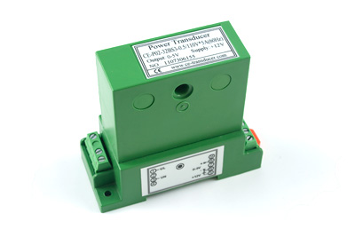
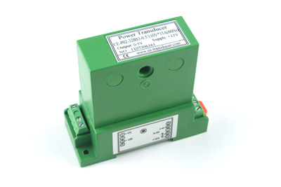

AC Active Power Sensor 0-250V*0-30A (60Hz)
Product Features
Measure AC active power up to 7500W at 60Hz with this sensor. Connects to an analog input.
Product Description
This AC Active Power sensor measures AC power up to 7500W. Powered by an external 12VDC power supply, the AC Active Power Sensor provides a 0 to 5VDC analog signal that is linearly proportional to the power measured.
The AC Power Sensor can easily be mounted using the screw holes, or on a 35mm wide DIN rail for quick installation. The terminal blocks accommodate conductors of up to AWG #16. The window in the Sensor has a diameter of 6.5mm.
The current sensor connects to an analog input on I/O boards.
The formula to translate the SensorValue into Power is:
P(W) = (SensorValue – SensorOffset) * 7.5
To determine the offset in your system, record the SensorValue when there is no power applied to the sensor. Use that value in the place of SensorOffset in the formula above.
AC Active Power Sensor 0-250V*0-5A (50Hz)
Product Features
Measure AC active power up to 1250W at 50Hz with this sensor. Connects to an analog input.
Product Description
This AC Active Power sensor measures AC power up to 7500W. Powered by an external 12VDC power supply, the AC Active Power Sensor provides a 0 to 5VDC analog signal that is linearly proportional to the power measured.
The AC Power Sensor can easily be mounted using the screw holes, or on a 35mm wide DIN rail for quick installation. The terminal blocks accommodate conductors of up to AWG #16. The window in the Sensor has a diameter of 6.5mm.
The current sensor connects to an analog input on Phidgets I/O boards. The formula to translate the SensorValue into Power is:
P(W) = (SensorValue – SensorOffset) * 1.25
To determine the offset in your system, record the SensorValue when there is no power applied to the sensor. Use that value in the place of SensorOffset in the formula above.
AC Active Power Sensor 0-250V*0-5A (60Hz)
Product Features
Measure AC active power up to 1250W at 60Hz with this sensor. Connects to an analog input.
Product Description
This AC Active Power sensor measures AC power up to 7500W. Powered by an external 12VDC power supply, the AC Active Power Sensor provides a 0 to 5VDC analog signal that is linearly proportional to the power measured.
The AC Power Sensor can easily be mounted using the screw holes, or on a 35mm wide DIN rail for quick installation. The terminal blocks accommodate conductors of up to AWG #16. The window in the Sensor has a diameter of 6.5mm.
The current sensor connects to an analog input on I/O boards. The formula to translate the SensorValue into Power is:
P(W) = (SensorValue – SensorOffset) * 1.25
To determine the offset in your system, record the SensorValue when there is no power applied to the sensor. Use that value in the place of SensorOffset in the formula above.
AC Active Power Sensor 0-110V*0-5A (60Hz)

Product Features
Measure AC active power up to 1250W at 60Hz with this sensor. Connects to an analog input.
Product Description
This AC Active Power sensor measures AC power up to 550W. Powered by an external 12VDC power supply, the AC Active Power Sensor provides a 0 to 5VDC analog signal that is linearly proportional to the power measured.
The AC Power Sensor can easily be mounted using the screw holes, or on a 35mm wide DIN rail for quick installation. The terminal blocks accommodate conductors of up to AWG #16. The window in the Sensor has a diameter of 6.5mm.
The current sensor connects to an analog input on Phidgets I/O boards. The formula to translate the SensorValue into Power is:
P(W) = (SensorValue – SensorOffset) * 0.55
To determine the offset in your system, record the SensorValue when there is no power applied to the sensor. Use that value in the place of SensorOffset in the formula above.
AC Active Power Sensor 0-110V*0-15A (60Hz)

Product Features
Measure AC active power up to 1650W at 60Hz with this sensor. Connects to an analog input.
Product Description
This AC Active Power sensor measures AC power up to 1650W. Powered by an external 12VDC power supply, the AC Active Power Sensor provides a 0 to 5VDC analog signal that is linearly proportional to the power measured.
The AC Power Sensor can easily be mounted using the screw holes, or on a 35mm wide DIN rail for quick installation. The terminal blocks accommodate conductors of up to AWG #16. The window in the Sensor has a diameter of 6.5mm.
The current sensor connects to an analog input on I/O boards. The formula to translate the SensorValue into Power is:
P(W) = (SensorValue – SensorOffset) * 1.65
To determine the offset in your system, record the SensorValue when there is no power applied to the sensor. Use that value in the place of SensorOffset in the formula above.
We Provide:
- To be accessible, friendly, and helpful at all times.
- To answer the phone when you call, 24/7/365.
- Reply to your emails and support tickets within 24 hours.
- To provide timely information about new hardware.
- To provide all design documentations.
Please fulfill following request form to get more information!